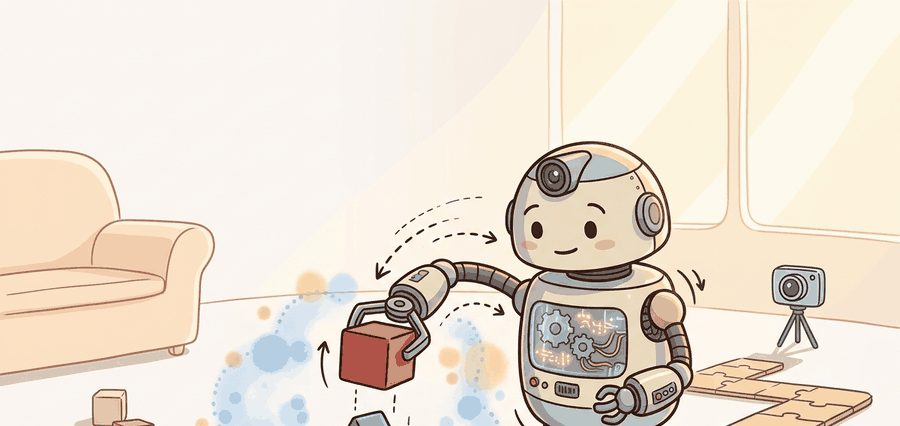
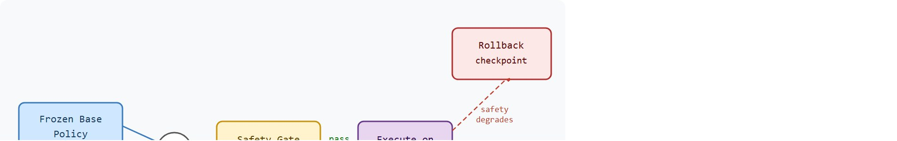

"Simulation was a forgiving teacher. Hardware charges for every failed exploration in torque, time, and sometimes metal."
A Robot That Learned the Hard Way

This section assumes familiarity with domain randomization and the RMA adaptation architecture from section 20.3, and with constrained policy optimization from section 18.3. The constrained update pattern introduced here is extended in section 20.5, which develops formal metrics for auditing whether hardware fine-tuning actually improved transfer. The safety-gate design recurs in Part 9, alongside force-controlled manipulation in section 42.3 and whole-body safety constraints for humanoids in section 46.2.
A quadruped steps off a lab bench onto gravel for the first time and stumbles. The simulator never modeled that texture. The team could retrain in sim for weeks, or let the robot learn from a handful of real steps, carefully bounded so a bad gradient cannot send a joint past its torque limit. That second path, hardware fine-tuning, is now practical and is closing the last gap between sim-trained policies and field-deployable robots. This section develops a constrained update protocol: safety gates that filter every proposed action, a frozen base policy that limits how much can go wrong, and a rollback checkpoint that ends the experiment before it ends the hardware.
The first bad gradient on real concrete does not show up as a number in a log file. It shows up as a Unitree A1 slamming a knee joint past its torque limit, and there is no undo button. So before the robot takes a single gradient step, the team should pin down four things in one transfer ledger. First, the randomized variables (friction range, payload mass, motor strength in Isaac Lab). Second, the simulator assumptions baked into the contact model. Third, the real-world measurements that set each bound (a force-torque sensor reading, a measured 38 ms actuator delay). Fourth, the handoff point where logged demonstrations or proprioceptive history take over from the sim-trained base. ETH Zurich's ANYmal locomotion work and Berkeley's A1 deployments both treat this bookkeeping as a precondition for touching hardware, not an afterthought. The "safety gates" mentioned here are defined formally, as explicit inequality constraints, in the Theory section below; for now, treat a gate as any check that can block a proposed action before it reaches the robot.
A transfer ledger matters on real hardware because physical consequences are irreversible. If randomization bounds, contact parameters, or sensor noise levels are unrecorded, a safety gate that passed in simulation may silently fail on the robot; an engineer then cannot distinguish a bad update from a bad assumption. Unrecorded handoff points also make it impossible to audit whether a reward gain came from better hardware adaptation or from a simulator assumption that happens to match the specific test surface but will not generalize.
The ledger pairs each sim parameter (friction range, mass uncertainty, delay model) with the real measurement or worst-case bound behind it, and flags every assumption never validated on hardware. During fine-tuning it doubles as a change log: widen a gate threshold or hit a new terrain, and you append the responsible parameter and its measurement. The result is a traceable chain from simulator choices through safety decisions to hardware outcomes.
A hardware fine-tuning protocol has five parts: a frozen simulator-trained policy, a real-robot evaluation gate, a constrained update rule, a human or automated stop channel, and a rollback checkpoint. As Figure 20.4A shows, hardware fine-tuning earns its extra performance only when every proposed action passes through explicit safety gates before reaching the robot. The point is to improve transfer without turning the robot into an uncontrolled training environment.

Figure 20.4B traces this constrained loop end to end: the frozen base and trainable residual combine into a proposed action, the safety gate filters it, and gradient updates flow back only to the residual adapter. The key question is practical: what evidence lets the team safely move from evaluation-only rollouts to limited policy updates on hardware?
A policy that works in simulation but fails on hardware is not a policy; it is an aspiration that has never met friction.
Safe hardware RL is not only about preventing catastrophic actions. It is about controlling the distribution of data the learner is allowed to create, because unsafe exploration can bias learning long before it breaks the robot.
To answer that question of when updates are safe, the gated loop sketched in Figure 20.4B has to be made precise, which means writing the safety filter and the update rule as explicit mathematical objects.
A hardware fine-tuning loop is written as a constrained update: choose action $a_t \sim \pi_\phi(a_t\mid o_t)$ only if $g_i(o_t,a_t) \leq 0$ for every safety gate $i$. The gates may encode workspace limits, force limits, speed limits, joint-temperature limits, distance from humans, controller health, and intervention triggers.
The update rule should be smaller than the safety case. A common pattern is to freeze the perception stack and low-level stabilizer, then adapt a residual policy, gain schedule, or high-level action bias; this is called the frozen-base, small-adapter principle, and it limits the blast radius of any single bad gradient step on hardware. That limits the blast radius of learning while still allowing hardware-specific improvement.
Think of the frozen-base, small-adapter principle like adjusting your grip pressure on a bicycle handlebar when you hit an unfamiliar road surface. Your arms (the adapter) absorb the new vibration and micro-correct your steering, but your core posture, balance point, and braking reflex (the frozen base) stay exactly as trained. If your grip adjustment turns out to be wrong, the worst outcome is a shaky moment, not a fall, because the stable foundation keeps the whole system recoverable. Allowing only the grip to change limits the blast radius of any single bad adjustment.
Consider a specific case. Kumar et al. (2021) deployed RMA (Rapid Motor Adaptation) on an A1 quadruped. They froze the base locomotion policy, trained in Isaac Gym on thousands of parallel environments, and adapted only a small encoder that reads 50 ms of proprioceptive history (the robot's own joint-position, joint-velocity, and orientation readings, as opposed to external sensing like vision). The adaptation module updated online from roughly 200 real steps per terrain type, whereas the base policy had required millions of sim steps to reach the same terrain. The frozen base did the heavy lifting, so the adapter could learn a new terrain in about the number of steps a child takes crossing a parking lot. Joint torque stayed capped at 33 Nm and episode length at 20 seconds per trial. The A1 recovered from terrain mismatches that the frozen base policy failed on, and neither the low-level PD controller (proportional-derivative controller, the fast feedback loop that converts a target joint position into a motor command) nor the reward shaping changed. This two-layer structure (frozen base, small trainable adapter) directly implements the constrained update pattern described here.
So far: a hardware update is only accepted if every safety gate $g_i(o_t,a_t)\leq 0$ passes; the frozen-base, small-adapter principle keeps the trainable part small so a bad gradient has limited blast radius; and RMA's A1 deployment shows both ideas combined, a frozen locomotion policy plus a small online-adapted encoder.
The mechanism is a gated loop: propose an action, filter it through constraints, execute under a monitor, record reward and safety events, update only within the approved parameter subset, and roll back if the gate statistics degrade. This is what "safe real-world RL" means in practice: not a separate algorithm, but the standard RL update rule wrapped in the constrained-update pattern above, so the family of methods in the literature is often called safe RL or constrained RL, and the gate set $\{g_i\}$ plays the role of the constraint set in that literature.
The intervention budget $B$ used below is the maximum acceptable rate of human safety stops (for example, no more than 1 stop per 10 rollouts); exceeding it is one of the triggers that forces a rollback.
Input: frozen simulator-trained policy $\pi_\theta$ (fixed parameters $\theta$), residual policy $\pi_\phi$ (trainable parameters $\phi$), safety gate set $\{g_i\}$, learning rate $\alpha$, rollback threshold $\delta$, intervention budget $B$
Output: updated residual parameters $\phi^*$ satisfying the safety envelope, or rolled-back $\phi_0$ if safety degrades
Trace one mini-batch of the algorithm on an A1-style residual pushing policy. Baseline frozen-policy intervention rate $r_0 = 0.05$ (1 stop per 20 rollouts), intervention budget $B = 0.10$, baseline blocked fraction $f_{\text{block},0} = 0.04$, learning rate $\alpha = 0.01$.
Step 3 (propose): at one timestep the frozen base outputs $\pi_\theta(o_t) = 0.16$ m/s forward speed; the residual adds $\pi_\phi(o_t) = +0.03$, giving a composite $a_t = 0.19$ m/s.
Step 4 (gate): speed limit is $0.20$ m/s, so $g_{\text{speed}} = 0.19 - 0.20 = -0.01 \leq 0$: passes. Force is $14$ N against a $15$ N limit, delay $38$ ms against $45$ ms: all gates pass, so $a_t$ executes. A later timestep proposes $0.22$ m/s ($g_{\text{speed}} = +0.02 > 0$): blocked and logged, never executed.
Step 6-7 (update): over $N = 32$ accepted transitions the gradient estimate is $\hat{\nabla}_\phi J = +0.8$, so $\phi \leftarrow \phi + 0.01 \times 0.8 = \phi_0 + 0.008$. Only $\phi$ moves; $\theta$ is untouched.
Step 8 (safety check): after the update the measured intervention rate is $r = 0.06$ ($< B = 0.10$, ok) and blocked fraction is $f_{\text{block}} = 0.05$ ($< 2 f_{\text{block},0} = 0.08$, ok), and held-out reward rose from $0.71$ to $0.74$. All criteria hold, so the update is kept. Had $r$ jumped to $0.12$, the rule $r > B$ would fire and immediately restore $\phi \leftarrow \phi_0$, discarding the $+0.008$ change before the next batch.
The numeric trace above showed the gate accepting and rejecting individual proposals; the same logic reduces to a few lines of code that any hardware loop can call before an action leaves the controller.
Code Fragment 20.4.1 implements an action gate for a residual pushing policy in four checks. The proposed residual is allowed only if speed, force, actuator delay, and workspace checks stay within the approved envelope.
# Gate a residual action before it reaches the real robot.
# A hardware fine-tuning loop updates only after safety checks pass.
proposal = {"speed_mps": 0.18, "force_n": 14.0, "delay_ms": 38, "workspace_ok": True}
limits = {"speed_mps": 0.20, "force_n": 15.0, "delay_ms": 45}
passes_gate = (
proposal["workspace_ok"]
and proposal["speed_mps"] <= limits["speed_mps"]
and proposal["force_n"] <= limits["force_n"]
and proposal["delay_ms"] <= limits["delay_ms"]
)
print(f"passes_safety_gate={passes_gate}")speed_mps, force_n, delay_ms, and workspace_ok before allowing a residual action, then prints passes_safety_gate=True for the given proposal. The point is to gate exploration before learning can turn a hardware quirk into a policy update.Expected output: a hardware fine-tuning diagnostic reports whether the action passed the gate and which constraint would have blocked it. If blocked actions are not logged, the learner's data distribution cannot be audited.
In practical systems, the RL library is only one part of the safety stack. Use ROS 2 controllers, watchdogs, collision monitors, force limits, and emergency-stop hardware around the learner. Gymnasium-style wrappers can express gates in software, but software gates must agree with the robot controller and physical stop channel.
When using Stable-Baselines3 for online hardware fine-tuning, set learning_starts to a very small value (typically 1 to 10 real steps) rather than accepting its default of 100 or 1000. The default delays the first policy update until a large replay buffer is filled, meaning the robot executes many unguided exploratory actions before the safety gate statistics can detect degradation and trigger a rollback. Pair this with a small batch_size (16 to 32 samples) so each update uses only recent on-hardware transitions rather than mixing in stale sim data that may have snuck into the buffer during initialization.
The common mistake is to report reward improvement without the safety denominator. A policy that gains 5 percent success while doubling intervention rate, overheating motors, or increasing blocked actions has not improved the deployable system.
A common assumption is that safety gate thresholds validated in simulation transfer unchanged to the real robot. They do not. Simulators cannot fully model contact stiffness, sensor latency, actuator backlash, or thermal drift. A gate that is conservative in sim may be too permissive on hardware, letting harmful torques or velocities reach the robot before the check fires. Treat sim-validated gates as a starting point only. Re-verify every threshold through evaluation-only rollouts on the actual hardware, record each result in the transfer ledger, and tighten until the blocked-action rate and intervention rate are stable before permitting any gradient update.
Hardware fine-tuning should be paused or aborted when any of the following thresholds are crossed in a single update batch: the human-intervention rate exceeds the pre-declared budget (for example, more than 1 intervention per 10 rollouts); the blocked-action fraction rises above its frozen-policy baseline by more than a factor of two; motor temperature exceeds the controller's safe operating range; or the reward on a held-out evaluation panel drops below the frozen-policy baseline. These thresholds must be written into the safety gate document before training begins, not chosen retrospectively after an anomaly appears.
A manipulation team may fine-tune only a residual wrist motion while freezing perception and impedance control for contact-rich interaction. The report should show the reward curve, the number of blocked actions, maximum force, recovery count, motor temperature range, and every human stop event.
ANYbotics deploys ANYmal, a four-legged inspection robot, for autonomous inspection in offshore energy plants and chemical refineries, where a fall onto live equipment is unacceptable. Their pipeline trains locomotion in simulation, then performs constrained on-site adaptation behind hard joint-torque and foot-clearance limits enforced by the low-level controller, so the learned policy can adjust to grating, oil-slick steps, and stairs without the operator ever ceding the emergency-stop and safety envelope. This is the frozen-base, gated-residual pattern running on a commercial robot that walks unattended through hazardous facilities.
A good hardware fine-tuning run is visible twice: once in the safety case and once in the replay artifact. The second view keeps the first one honest.
Safe real-world RL on physical platforms is constrained by sample cost measured in robot-hours, not GPU-hours. Three active 2024-2026 directions are reshaping the field.
World-model-guided safe fine-tuning. Rather than gating actions post-hoc, recent work trains a learned world model alongside the policy and queries it to predict whether a proposed action sequence will violate a constraint before execution. Reported work along these lines uses diffusion-based world models to imagine the near-future trajectory of a manipulator under a candidate residual action and reject candidates whose imagined force or collision probability exceeds a threshold; early results suggest this can typically reduce blocked-action rates on hardware relative to explicit gate filtering alone, though the safety guarantees depend on how faithfully the world model captures the failure modes the gates were designed to catch.
Foundation-model-initialized RL with minimal hardware rollouts. Large visuomotor foundation models (for example, Physical Intelligence's pi0, 2024) pre-train on hundreds of hours of cross-embodiment data, then fine-tune on fewer than 50 real demonstrations with a lightweight RL wrapper that only adjusts the final action head. This separates the sample-intensive representation learning (done in sim and from passive data) from the safety-critical online adaptation (done on hardware with tight constraints), and reported cases suggest it can typically shrink the real-hardware fine-tuning budget by roughly one to two orders of magnitude compared to training from scratch, though this depends heavily on how close the target task is to the foundation model's pretraining distribution.
Formal runtime monitors with learned certificates. Hamilton-Jacobi reachability (a formal method that computes the set of states from which a system can still avoid a failure condition) and control barrier functions (functions that stay non-negative only while the system remains inside a safe region) have matured into learned neural certificate methods that can be verified online. Work from Berkeley and MIT (2024-2025) trains a neural control barrier function jointly with the residual policy so that certificate violations trigger an automatic safe fallback rather than requiring a human stop. This moves safety from an offline design choice to a continuously re-certified property during hardware fine-tuning.
Open problem for PhD students: Current safe fine-tuning methods treat the safety gate thresholds as fixed hyperparameters chosen before the run. A principled method for adaptive threshold tightening or loosening based on real-time estimates of the policy's uncertainty and the robot's remaining wear budget does not yet exist. Combining epistemic uncertainty quantification from the residual policy with a hardware-state model (joint temperature, actuator fatigue, contact-event count) to set gate thresholds dynamically is an open problem with direct deployment relevance.
Before a hardware update, can you name the trainable parameters, frozen parameters, safety gates, rollback rule, intervention budget, and evidence needed to widen the gate?
The idea in this section becomes useful when the hardware protocol is explicit enough to audit. The protocol names the frozen policy checkpoint, the trainable residual, the gate conditions, the monitoring frequency, the intervention policy, and the rollback checkpoint. Without these details, hardware fine-tuning becomes an anecdote.
The graduate-level habit is to separate three claims. The improvement claim says the policy performs better. The safety claim says exploration stayed within the approved envelope. The deployment claim says the final policy remains robust under held-out initial conditions and delay tests.
| Tool or Library | Role in the Topic | Builder Advice |
|---|---|---|
| ROS 2 controllers | Hardware command boundary | Use them to enforce action limits, controller state checks, and emergency stop integration outside the learner. |
| Gymnasium wrappers | Software safety gates | Use wrappers to block unsafe actions and record the blocked-action denominator during evaluation. |
| Stable-Baselines3 | Small online updates | Use it only after freezing the policy parts that should not change on hardware. |
| LeRobot | Dataset and policy replay | Use it to archive hardware traces, interventions, and policy checkpoints for review. |
| MuJoCo or Isaac Lab | Pre-hardware gate rehearsal | Use simulation to replay proposed safety gates before allowing real-world updates. |
A robust implementation starts with a safety gate document and a logging schema. The gate document states what can stop an action. The schema records what was proposed, what was blocked, what was executed, and whether the policy was updated afterward.
When hardware fine-tuning fails, assign the failure to one of four categories: unsafe proposal, wrong gate, harmful update, or misleading reward. Then rerun the frozen checkpoint against the same starts to decide whether the update caused the failure or merely exposed a preexisting transfer gap.
For hardware fine-tuning, compare only construct-matched metrics that are co-computed in one pass on one protocol: same frozen checkpoint, same trainable subset, same safety gates, same intervention policy, same initial-condition panel, and the same success definition. Save reward, blocked actions, interventions, resets, videos or state logs, and hardware health in one artifact.
Hardware fine-tuning is useful when it improves the deployable policy inside an audited safety envelope, not when it increases reward by spending hidden risk.
Design a hardware fine-tuning gate for one robot task. Specify the frozen checkpoint, trainable subset, force limit, speed limit, delay limit, stop rule, rollback rule, and safety denominator to report with reward.
Goal: see empirically how an action gate plus a rollback rule decouples reward from risk, and how widening a threshold trades one for the other.
Tools needed: Python, gymnasium, and stable-baselines3 (pip install gymnasium stable-baselines3). Use the Pendulum-v1 environment as a stand-in for hardware.
Steps: Train a SAC (Soft Actor-Critic, an off-policy RL algorithm well suited to continuous-control tasks like torque commands) policy for a short budget (about 20k steps) to get a competent but imperfect base. Treat that as the frozen base. Then run a constrained fine-tuning loop that, at each step, computes the proposed torque, rejects any action whose absolute value exceeds a gate limit tau_max (start at $2.0$ Nm, well inside the $\pm 2.0$ action range), logs the blocked-action fraction, and reverts the policy to the previous checkpoint whenever the running episode return drops below the frozen baseline.
What to vary: sweep tau_max over $\{1.0, 1.5, 2.0\}$ and the rollback threshold over two values; optionally inject observation noise to mimic sensor latency.
What to observe: plot mean return, blocked-action fraction, and rollback count against tau_max. You should see that the tightest gate blocks the most actions but never lets return collapse, while the loosest gate occasionally earns higher reward yet triggers more rollbacks: the same risk-versus-reward denominator the section insists you report alongside any improvement claim.
Beginner (weekend): Safety-gated pendulum fine-tuner. Train a policy in Gymnasium's CartPole or Pendulum environment, then write a constrained update loop that blocks any proposed action exceeding a speed or torque threshold and logs the blocked-action fraction after every mini-batch; the key challenge is verifying that the gate statistics degrade correctly when you deliberately widen the threshold past a safe value. Intermediate (1-2 weeks): RMA-style adapter for a quadruped in Isaac Lab. Freeze a base locomotion policy trained in Isaac Lab under domain randomization, attach a small 3-layer MLP (Multi-Layer Perceptron) adapter that reads 50 ms of proprioceptive history, and fine-tune only the adapter on a different terrain mesh; the key challenge is implementing the rollback checkpoint so that a rising intervention rate or blocked-action fraction restores the pre-update adapter weights automatically. Intermediate (1-2 weeks): Hardware-safe residual wrist policy with LeRobot and ROS 2. Replay a manipulation demonstration dataset from LeRobot to initialize a residual wrist-motion policy, wrap it in a ROS 2 controller node that enforces force and joint-speed limits as hard gates, and run 50 real or PyBullet hardware-equivalent rollouts while logging every blocked action and human stop event alongside the reward curve; the key challenge is ensuring the software gate and the ROS 2 controller agree on the same threshold values so no conflicting limit check can be silently bypassed.
This section turned fine-tuning on hardware; safe real-world rl into a testable embodied-learning contract: define the loop, choose the tool, save one comparable artifact, and diagnose failure by interface. Next, continue with Section 20.5, where the same evaluation habit carries into the next reinforcement-learning decision.
Kumar, A. et al. (2021). RMA: Rapid Motor Adaptation for Legged Robots. RSS.
Introduces RMA, which separates a base policy trained with full privileged state from a lightweight adaptation module trained online from proprioception only. Read Section 3 for the two-phase training procedure; RMA is one of the clearest demonstrations that explicit adaptation at inference time outperforms domain randomization alone for legged locomotion.
This paper shows dynamics randomization for transferring learned control policies.
Tan, J. et al. (2018). Sim-to-Real: Learning Agile Locomotion for Quadruped Robots. RSS.
This work is a clear example of transferring locomotion policies from simulation to hardware.
Demonstrates that training with randomized visual and physical parameters forces policies to learn features invariant to simulator appearance, enabling direct transfer to a physical robot without fine-tuning. Read to understand the gap between visual sim-to-real and dynamics sim-to-real; this paper focuses on the visual side.
NVIDIA Isaac Lab documentation.
NVIDIA's GPU-accelerated robot learning framework that runs thousands of parallel environments on a single GPU. Read the documentation for task configuration, domain randomization APIs, and the sim-to-real export path; massively parallel training with Isaac Lab is how locomotion and dexterous manipulation policies achieve the sample counts needed for sim-to-real transfer.
Drake is relevant when transfer work needs explicit dynamics, constraints, and system identification.